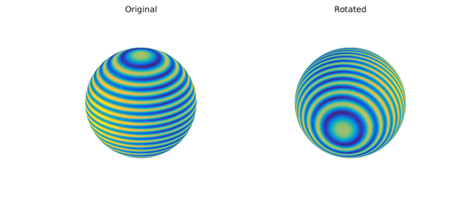
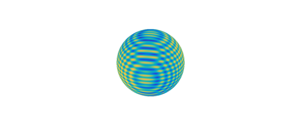
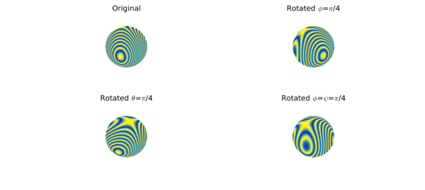
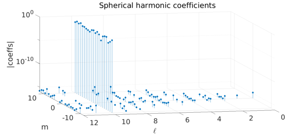
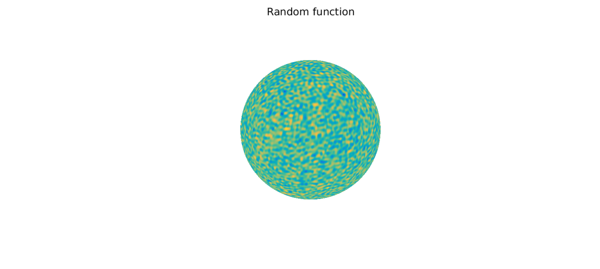
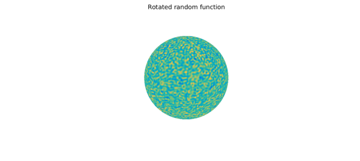
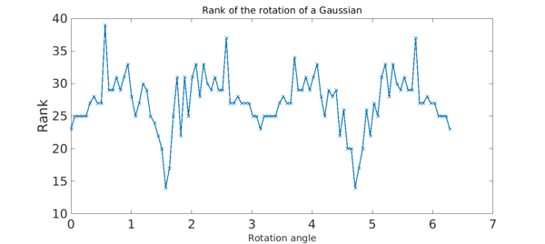

Introduction
Rotating functions defined on the sphere has applications in many fields, including quantum mechanics, inverse scattering, and integral equations. Spherefun now has a fast rotate command that allows one to efficiently rotate functions. For example, the code below plots the function $f(x,y,z) = \cos(50z) + x^2$, where $x^2 + y^2 + z^2 = 1$, and a rotated version (details on how to specify the rotation are given below).
f = spherefun(@(x,y,z) cos(50*z) + x.^2);
g = rotate(f, -pi/4, pi/2, pi/8);
subplot(1,2,1)
FS = 'fontsize'; fs = 26;
plot( f ), title('Original',FS,fs), axis off
subplot(1,2,2)
plot( g ), title('Rotated',FS,fs), axis off

The rotate command requires a highly nontrivial computation, because the rotated function must be represented by an approximant in the original coordinate system. This allows one to continue to do algebraic manipulations on the rotated function. For example, convenient algebraic manipulations.
h = f + g; clf, plot( h ), axis off

The rotate command computes the rotated function essentially to machine precision. For instance, the 2D integral over the sphere is preserved:
abs( sum2(f) - sum2(g) )
ans =
1.776356839400250e-15
Euler angles
The command accepts rotations described in terms of Euler angles, denoted by $(\phi,\theta,\psi)$ in the so-called ZXZ convention. That is, the rotation is: first rotate about the $z$-axis by an angle $\phi$, then rotate about the (original) $x$-axis by an angle $\theta$, then about the new $z$-axis by an angle $\psi$. All angles should be given in radians. For example, here are the rotations corresponding to the Euler angles $(\pi/4,0,0)$, $(0,\pi/4,0)$, and $(\pi/4,0,\pi/4)$:
f = spherefun(@(x,y,z) cos(50*x.*(y-.5)));
subplot(2,2,1)
plot( f ), title('Original',FS,fs), axis off
subplot(2,2,2)
g = rotate( f, pi/4, 0, 0);
plot( g ), title('Rotated \phi=\pi/4',FS,fs), axis off
subplot(2,2,3)
g = rotate( f, 0, pi/4, 0);
plot( g ), title('Rotated \theta=\pi/4',FS,fs), axis off
subplot(2,2,4)
g = rotate( f, pi/4, 0, pi/4);
plot( g ), title('Rotated \phi=\psi=\pi/4',FS,fs), axis off

Every rigid-body rotation of the sphere can be described in terms of these three Euler angles.
Rotation using the spherical harmonic expansions
The classical algorithm for computing the rotation of a function $f$ on the sphere is to first express $f$ in terms of a spherical harmonic expansion and then to use the fact that the spherical harmonics form a basis of SO(3) [4]. For example, if $f$ is the spherical harmonic function $Y_{\ell}^m(\lambda,\theta)$, then any rotation of $Y_{\ell}^m(\lambda,\theta)$ can be written as a linear combination of $Y_{\ell}^s(\lambda,\theta)$ for $-\ell\leq s\leq \ell$ in the original coordinate system. That is,
$$ Y_{\ell}^m(\lambda',\theta') = \sum_{s=-\ell}^{\ell} A_{ms}Y_{\ell}^s(\lambda,\theta), $$
where $(\lambda',\theta')$ is in the rotated coordinated system. Since the above linear combination only involves $Y_{\ell}^s(\lambda,\theta)$ for $-\ell\leq s\leq \ell$ (for the same parameter $\ell$), it can be used to derive a fast algorithm for rotating functions on the sphere.
We can verify the above statements by computing the spherical harmonic coefficients of $Y_{10}^{3}$ after a rotation with Euler angles $(\pi/4,\pi/3,-\pi/8)$:
eulerAngles = [pi/4, pi/3, -pi/8];
f = spherefun.sphharm( 10, 3 );
g = rotate(f, eulerAngles(1), eulerAngles(2), eulerAngles(3));
% Compute the spherical harmonic coefficients of g:
N = 12; k = 1;
coeffs = zeros((N+1)^2,3);
for l = 0:N
for m = -l:l
Y = spherefun.sphharm(l,m);
coeffs(k,1) = sum2(g.*Y);
coeffs(k,2:3) = [l m];
k = k + 1;
end
end
clf
stem3(coeffs(:,2),coeffs(:,3),abs(coeffs(:,1)),'filled')
ylim([-N N]), zlim([1e-16 1]), view([-13 18])
set(gca,'ZScale','log'), set(gca,'Xdir','reverse'),
xlabel('$\ell$','Interpreter','Latex'), ylabel('m'), zlabel('|coeffs|')
title('Spherical harmonic coefficients')

We see that only the $\ell=10$ coefficients have changed. We can verify this further by computing the rotated spherical harmonic directly as a linear combination of $Y_{\ell}^s(\lambda,\theta)$ for $-\ell\leq s\leq \ell$.
h = spherefun(0);
k = 1;
for m = -10:10
h = h + coeffs((9+1)^2 + k,1)*spherefun.sphharm(10,m);
k = k + 1;
end
norm(h - g)
ans =
9.363579636030373e-15
An alternative rotate algorithm based on the 2D NUFFT
While spherical harmonic expansions present a natural approach for representing functions on the sphere, Spherefun does not use them. Instead it uses the double Fourier sphere method with a low rank technique (based on a structure-preserving Gaussian elimination procedure) for approximating functions on the sphere to essentially machine precision [3]. This method allows us to employ fast transforms based on the FFT with no setup costs, unlike fast spherical harmonic transforms [2], and provides highly adaptive discretizations.
Since Spherefun does not use spherical harmonics, it cannot directly use the rotation technique described above. The implementation of rotate in Spherefun is instead based on a two-dimensional nonuniform FFT (NUFFT) [1], which makes for a fast rotation algorithm.
The approach we use in the rotate command is to evaluate the function on a rotated tensor product grid and then call the Spherefun constructor. The NUFFT allows this evaluation to be done in near optimal complexity. The rotate command has an optional input that allows one to compare the naive approach to our NUFFT approach.
To illustrate the speed-up that can be achieved with the NUFFT, we consider the following ``random'' function on the sphere:
f = randnfunsphere( 0.03 );
plot( f ), title('Random function',FS,fs), axis off

For this function, we see a big speed-up for the NUFFT:
s = tic; g = rotate(f, pi/3, pi/2, 0.5, 'feval'); t_feval = toc(s);
s = tic; h = rotate(f, pi/3, pi/2, 0.5); t_nufft = toc(s);
fprintf('NUFFT speed-up factor = %2.1f\n', t_feval/t_nufft)
plot( h ), title('Rotated random function',FS,fs), axis off
NUFFT speed-up factor = 4.4

We hope that this speed-up allows for successful applications of the rotate command.
Ranks of rotated functions
Spherefun computations are based on exploiting an underlying low rank structure of functions on the sphere. For example, the following function on the sphere is mathematically a full rank function that can be approximated to essentially machine precision by a rank $29$ function:
f = spherefun(@(x,y,z) cos(100*x.*y)); rank( f )
ans =
29
Similar to the rotated functions in Figure 3.1 of [5], we find that the required rank is sensitive to the orientation of the function. For example, here we barely rotate a function, but increase its numerical rank by a factor of $2.5$.
g = rotate(f, 0.01, 0.01, 0.01); rank(g)
ans =
74
In particular, there is no mathematical relationship between the rank of the original function and its rotation. This means that the rotate command cannot take advantage of the low rank structure of a function. Here, is a rotation that increases the rank by about a factor of $5$:
g = rotate(f, pi/4, -pi/3, -pi/8); rank(g)
ans = 141
As a final example to show how the rank can change as the function is rotated, we consider a Gaussian function restricted to the sphere. We start with the Gaussian slightly offset from the $y$-axis and then rotate it over the $x$-axis and track how the rank changes.
cntr = -[sin(0.1) cos(0.1)];
f = spherefun(@(x,y,z) exp(-10*((x-cntr(1)).^2+(y-cntr(2)).^2+z.^2)));
alp = linspace(0,2*pi,101); rk = zeros(size(alp));
for k=1:length(alp)
g = rotate(f, 0, alp(k), 0);
rk(k) = rank(g);
end
plot(alp,rk,'x-','LineWidth',2), xlabel('Rotation angle',FS,fs)
ylabel('Rank'), title('Rank of the rotation of a Gaussian',FS,fs)

As the Gaussian approaches the north and south poles (at rotation angles of $\pi/2$ and $3\pi/2$, respectively) we see that the rank decreases substantially. If we had not offset the Gaussian from the $y$-axis then the rank would have been exactly 1 at north and south poles since the Gaussian reduces to $\exp(-20(1\pm z))$ there.
References
[1] D. Ruiz-Antolin and A. Townsend, "A nonuniform fast Fourier transform based on low rank approximation", submitted, 2017.
[2] R. M. Slevinsky, "Fast and backward stable transforms between spherical harmonic expansions and bivariate Fourier series", submitted, 2017.
[3] A. Townsend, H. Wilber, and G. W. Wright, "Computing with functions defined on polar and spherical geometries I. The Sphere", SISC, 2016.
[4] A. Townsend and G. W. Wright, "Spherical harmonics", Chebfun Example, May 2016.
[5] L. N. Trefethen, "Cubature, approximation, and isotropy in the hypercube", SIAM Review, to appear. Available at https://people.maths.ox.ac.uk/trefethen/papers.html.